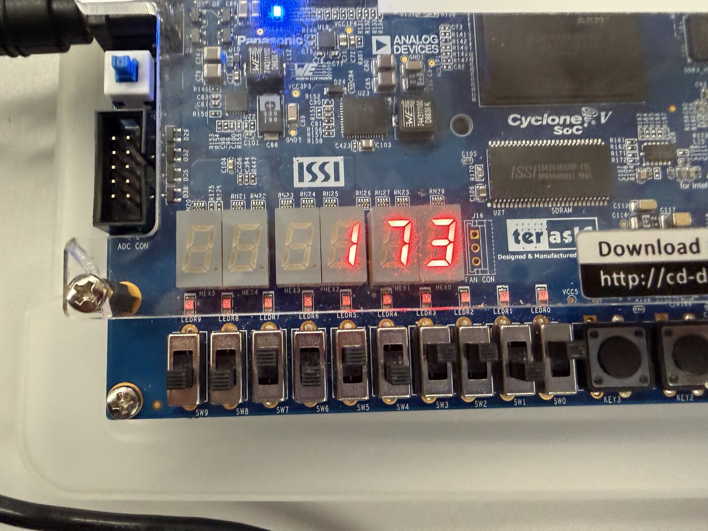
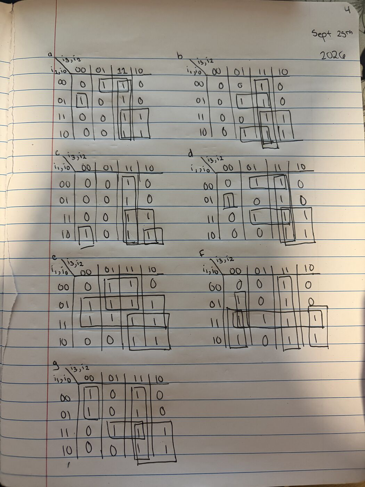
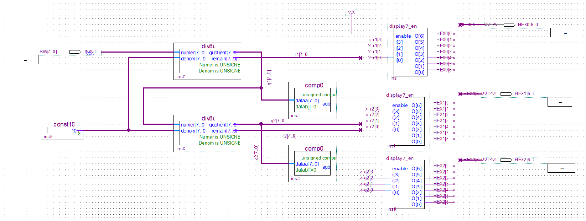
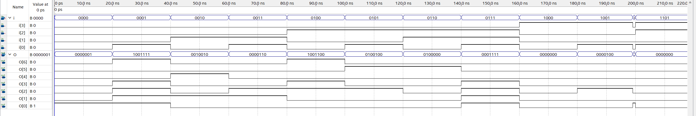
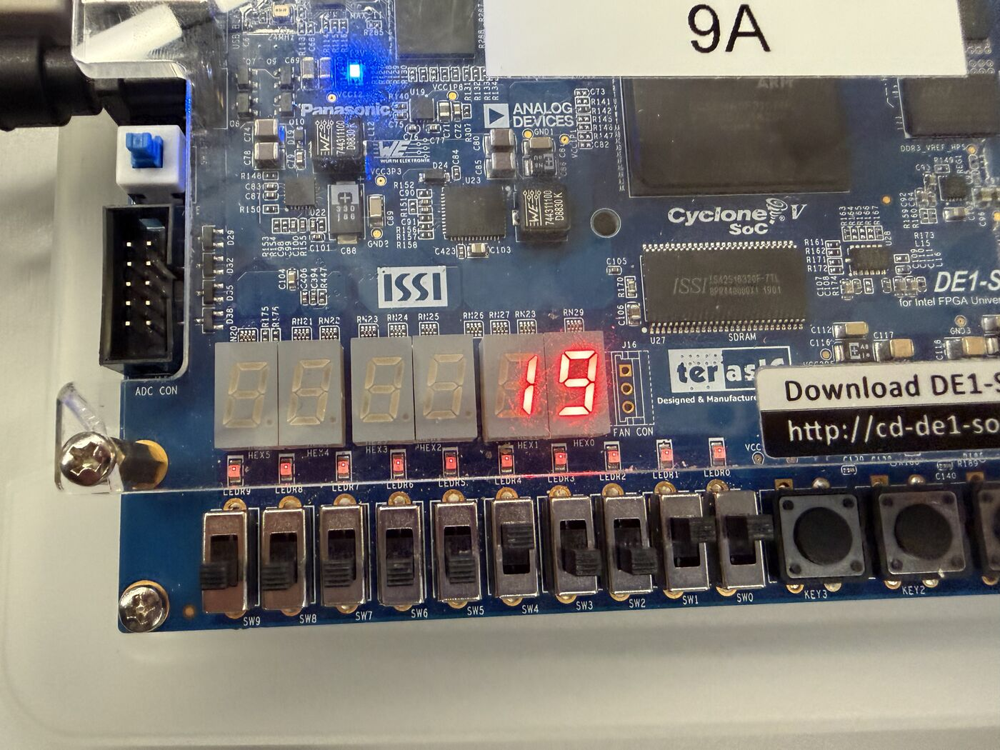

8-bit decimal display decoder
Binary-to-decimal conversion on a Cyclone V FPGA, driving three 7-segment displays
- Platform
- Intel DE1-SoC (Cyclone V)
- Tools
- Quartus Prime, LPM divider and comparator IP, VWF simulation
- Dates
- Sept – Oct 2026
- Context
- EECE 2160 Embedded Design, Lab 2, with a lab partner
ResultDisplays any 8-bit input (0–255) in decimal across three 7-segment displays, with leading zeros suppressed.
Goal
Display any 8-bit binary input (0–255) from the board's switches as a decimal number on three 7-segment displays.
What I did
- Built a 16-row truth table and derived minimized Boolean expressions for all seven segments with Karnaugh maps, forcing every non-BCD input (10–15) to blank the display.
- Packaged the decoder and an enable control into reusable blocks, then chained two divide-by-10 stages: the remainders become the ones and tens digits, and the final quotient becomes the hundreds digit.
- Suppressed leading zeros with comparator blocks, enabling each display from the quotient rather than its own digit so a middle zero still shows (205 displays as 205, not 2 5).
Challenges and results
On the first hardware test, non-BCD inputs stayed lit. I traced it to the Karnaugh maps, where those inputs were treated as don't-cares instead of 1s, corrected the expressions, and confirmed the fix in simulation. The final design displayed 7, 19, and 173 correctly on the board.




